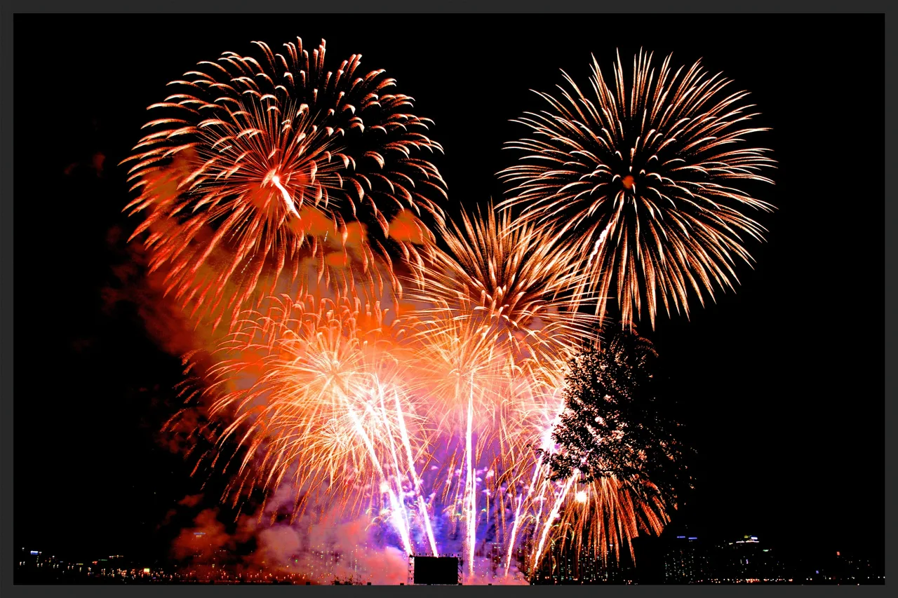
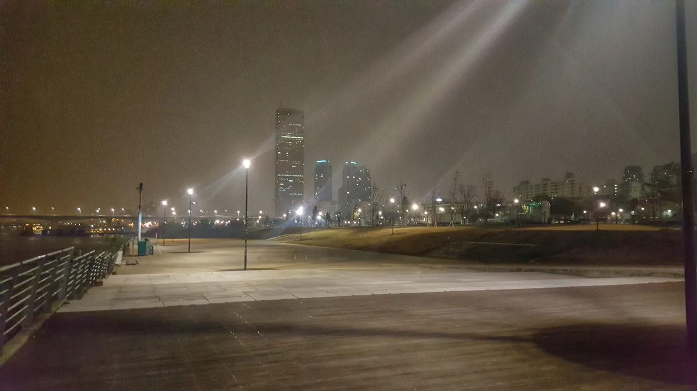
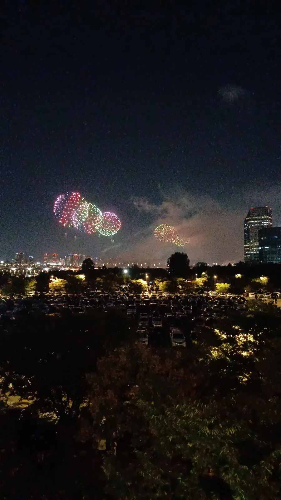
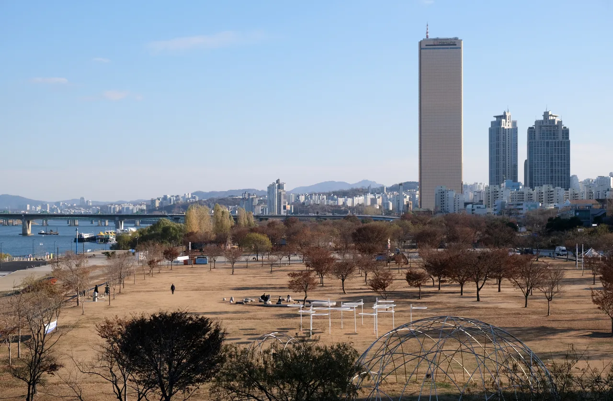
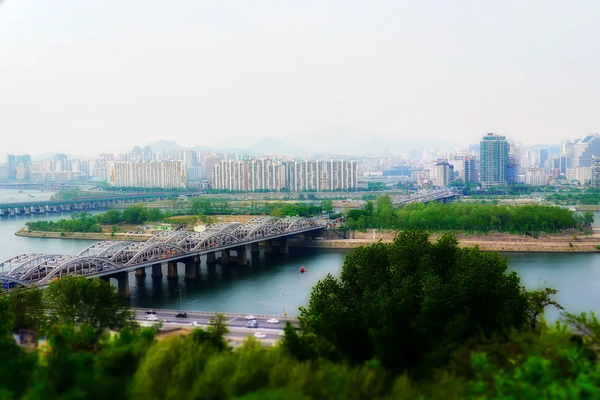
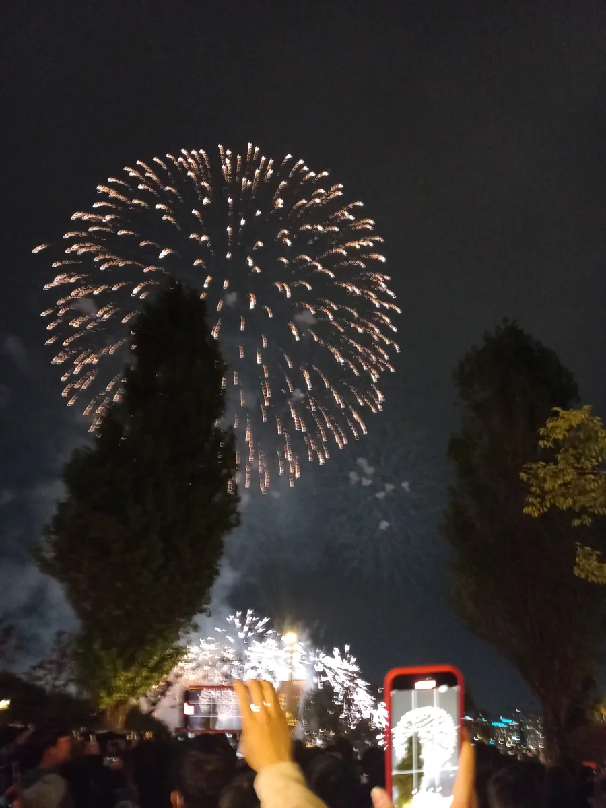

▲ 2026 서울세계불꽃축제는 9월 5일(토) 여의도 한강공원 일대에서 열린다 ⓒ Wikimedia Commons
1. 일정부터 정리하면 — 올해는 3주 앞당겨졌다
2026 서울세계불꽃축제는 9월 5일(토) 오후 1시부터 밤 10시까지 열립니다. 장소는 여의도 한강공원 일대, 정확히는 마포대교부터 한강철교 사이 구간입니다.
올해는 예년보다 약 3주 앞당겨 개최됩니다. 추석 연휴와 외국인 관광 수요를 고려한 조정이라는 게 주최 측 설명입니다. 즉 해마다 10월로 기억하고 있던 일정이라면, 올해는 달력을 다시 확인해야 합니다.
| 시간 | 프로그램 |
|---|---|
| 13:00 ~ 19:00 | 시민참여 프로그램 (홍보부스, 경품, 포토존) |
| 19:40 ~ 20:00 | 개막식 |
| 20:00 ~ 21:10 | 메인 불꽃쇼 (영국 → 미국 → 한국) |
| 21:10 ~ 22:00 | DJ 공연 |
메인 쇼는 영국, 미국, 한국 3개국 팀이 순서대로 나눠 맡습니다. 영국팀이 오후 8시부터 15분, 미국팀이 8시 20분부터 15분, 한국팀이 8시 40분부터 30분간 대미를 장식합니다. 원효대교를 활용한 '타워불꽃'과 좌우 대칭으로 펼쳐지는 '데칼코마니' 연출이 이번 시즌의 핵심 볼거리로 예고돼 있습니다.
전야제는 하루 전인 9월 4일(금)에 별도로 열립니다. 시민참여 프로그램 위주이고, 불꽃쇼 본편은 5일 하루뿐입니다.
2. 63빌딩 앞 주차장, 금요일 저녁부터 닫힌다

▲ 63빌딩 앞 한강공원. 이 일대 주차장은 축제 전날인 9월 4일 오후 6시부터 폐쇄에 들어간다 ⓒ Wikimedia Commons
가장 먼저 확인해야 할 것은 63빌딩 앞 여의도한강공원 주차장입니다. 이 주차장은 9월 4일(금) 오후 6시부터 9월 5일(토) 밤 12시까지 폐쇄됩니다. 축제 당일이 아니라 전날 저녁부터 닫힌다는 점이 핵심입니다. "토요일 오후에나 가면 되겠지"라고 생각했다가는 금요일 밤 나들이부터 발이 묶일 수 있습니다.
도로 통제는 두 갈래로 진행됩니다.
| 구간 | 통제 시간 | 비고 |
|---|---|---|
| 여의동로 (마포대교 남단 ~ 63빌딩 앞) | 9/5(토) 15:00 ~ 24:00 | 9시간, 당일 통제 |
| 원효대교 | 9/4(금) 09:00~17:00 부분통제 9/5(토) 09:00 ~ 9/6(일) 03:00 전면통제 | 차도·인도 모두 통제 |
특히 원효대교는 통제 시간이 18시간에 달합니다. 토요일 오전 9시부터 일요일 새벽 3시까지 차도와 인도가 전부 막힙니다. 여의도와 용산 방향을 이 다리로 오갈 계획이었다면 다른 경로를 미리 정해둬야 합니다.
여기서 끝이 아닙니다. 새벽 3시에 통제가 풀린 뒤에도, 9월 6일(일) 오전 9시부터 낮 12시까지 원효대교 상행 1개 차로와 인도가 다시 통제됩니다. 밤늦게 자리를 정리하고 일요일 오전 일정을 잡았다면 이 재통제 구간도 함께 감안해야 합니다.
지하철도 예외는 아닙니다. 여의나루역은 혼잡이 심해지면 무정차 통과하거나 출입구를 일시 폐쇄할 수 있습니다. 대체역으로는 여의도역, 마포역, 샛강역이 안내됩니다.
3. 그럼 차는 어디에 두나 — 카카오T가 대안이 됐다

▲ 지난 시즌 여의도 인근 주차장. 행사장 코앞 주차장이 막히는 만큼, 외곽 주차 후 도보·대중교통 진입이 현실적인 대안이다 ⓒ Wikimedia Commons
결론부터 말하면, 축제 당일 여의도 한복판까지 차로 진입하는 것은 사실상 불가능합니다. 도로 통제와 주차장 폐쇄가 겹치기 때문입니다. 그래도 자차로 근처까지 이동하고 싶다면, 올해는 공식적으로 준비된 대안이 있습니다.
카카오모빌리티가 올해 처음으로 '주차 사전 예약 서비스'를 엽니다. 카카오T 앱 통합검색창에 '불꽃'을 입력하거나 카카오내비의 '불꽃축제' 배너를 누르면 전용 페이지로 연결됩니다. 여기서 원하는 명당의 '주변 주차장 보기'를 누르면 행사 당일 이용 가능한 주차장을 확인하고 그 자리에서 예약할 수 있습니다.
이 서비스는 여의도·노량진·용산·공덕, 합정·당산, 회현·충무로 세 권역으로 나눠 안내됩니다. 즉 행사장 코앞이 아니라 도보나 대중교통으로 갈아탈 수 있는 거리에 차를 세우는 방식입니다. 여의도 전역이 통제되는 당일 상황을 고려하면, 지금으로선 이 방식이 가장 현실적인 절충안입니다.
4. 명당은 하나가 아니다 — 위치별로 얻는 게 다르다

▲ 마포대교에서 본 여의도한강공원. 63빌딩과 한강을 낀 넓은 부지가 축제의 무대다 ⓒ Wikimedia Commons
여의도 불꽃축제는 관람 장소마다 얻는 게 다른 축제입니다. 크게 세 유형으로 나뉩니다.
| 유형 | 장소 | 특징 |
|---|---|---|
| 근접 관람 | 여의도한강공원, 이촌한강공원 | 현장 음향과 함께 정면으로 관람. 이촌은 수면 반사까지 볼 수 있음 |
| 고지대 관람 | 사육신역사공원, 용양봉저정공원, 효사정공원, 달마공원 | 인파를 피해 위에서 조망. 시야 확보가 상대적으로 여유로움 |
| 원거리 관람 | 양화·선유도한강공원, 마포새빛문화숲, 반포한강공원 | 이동은 편하지만 규모감은 줄어듦 |
여의도한강공원과 이촌한강공원처럼 인기가 높은 곳은 늦어도 오후 4시 이전에는 자리를 잡아야 합니다. 프로그램이 시작되는 오후 1시부터 사람이 몰리기 시작해, 메인 쇼가 열리는 8시 무렵에는 이미 자리를 구하기 어려워지는 것이 매년 반복되는 패턴입니다.
노들섬은 올해 아예 유료 관람구역으로 운영됩니다. 노들섬 전체가 '오렌지플레이존'으로 지정돼 1구역 11만 원, 2구역·3구역 각 16만 5,000원, 4구역 22만 원의 사전 티켓을 소지한 사람만 입장할 수 있습니다. 무료로 여유 있게 보고 싶다면 노들섬 대신 위 세 유형 중에서 골라야 합니다.

▲ 노들섬 일대 한강 풍경. 올해는 섬 전체가 유료 관람구역 '오렌지플레이존'으로 운영돼 사전 티켓 없이는 입장할 수 없다 ⓒ Wikimedia Commons
노들섬 유료구역 안에서는 삼각대·셀카봉·중대형 촬영장비 사용이 제한됩니다. 사진 촬영이 목적이라면 이 점도 미리 확인해야 합니다.
5. 우천 대응과 안전수칙 — 놓치면 아쉬운 디테일
올해도 100만 명 이상이 몰릴 것으로 예상됩니다. 매년 반복되는 규모지만, 그만큼 서울시와 영등포구도 대응 인력을 크게 늘렸습니다. 서울시는 안전인력 약 6,800명을 투입해 경찰·소방과 이틀간 종합안전본부를 운영하고, 영등포구도 부구청장을 본부장으로 하는 행정지원본부에 연인원 452명을 배치합니다. 여의나루역을 포함한 인근 21개 역사에는 평소보다 3~5배 많은 안전요원이 배치될 예정입니다.
📍 비가 오면 어떻게 되나
공식 홈페이지는 "우천, 강풍 등의 사유로 일정이 변경될 수 있다"고 안내하고 있습니다. 별도로 확정된 예비일(순연일)은 공지돼 있지 않으며, 실제 진행 여부는 축제 전날과 당일 한화 서울세계불꽃축제 공식 홈페이지 공지사항을 통해 확인해야 합니다. 즉 "우천 시 다음 날 진행" 같은 고정된 규칙이 아니라, 기상 상황에 따라 그때그때 공지가 나오는 방식입니다. 자차로 멀리서 이동할 계획이라면 출발 전 홈페이지를 한 번 더 확인하는 것이 안전합니다.
대중교통 증회도 예년보다 폭넓게 준비됐습니다. 축제 당일인 5일 지하철 5호선은 18회, 9호선은 65회 증회 운행됩니다. 버스는 여의도를 지나는 24개 노선이 임시 우회하고, 혼잡이 집중되는 오후 7~8시와 밤 10~11시에는 26개 노선이 집중 배차됩니다. 다만 공유자전거 따릉이와 한강버스는 이 시간대 제한 운영되므로, 이 두 수단을 귀가 동선으로 잡았다면 대안을 함께 준비해야 합니다.
여의동로 안에서도 예외적으로 차량이 다닐 수 있는 구간이 있습니다. 파크원 타워부터 여의동주민센터 사이는 '선택적 통제' 구간으로, 9월 5일 오후 3시부터 밤 12시까지 아파트 주민 차량과 행사 관계 차량에 한해서만 통행이 허용됩니다. 일반 방문객이 이 구간으로 진입할 수 있는 것은 아니므로, 인근 거주자가 아니라면 다른 통제 구간과 마찬가지로 접근이 어렵다고 보는 편이 맞습니다.
✅ 현장에서 챙겨야 할 준비물·수칙
· 대규모 인파와 불꽃 연기로 미세먼지 농도가 오를 수 있어 마스크 착용이 권고됩니다
· 밤 시간대 기온 하강에 대비해 긴소매 겉옷과 무릎담요, 돗자리를 챙기는 것이 좋습니다
· 불꽃쇼 진행 중에는 소등과 혼잡으로 편의시설 이동이 쉽지 않으니 간식과 음료는 미리 준비해야 합니다
· 쓰레기는 아무 데나 두지 말고 지정된 클린존에 배출해야 합니다
6. 정리 — 이번 축제의 승부처는 '언제 나가느냐'

▲ 메인 불꽃쇼가 끝나는 밤 9시 10분 직후가 인파와 교통이 가장 몰리는 시간대다 ⓒ Wikimedia Commons
첫째, 63빌딩 앞 주차장은 금요일 저녁부터 닫힌다는 것을 기억하십시오. 토요일 오후에 도착해도 이미 늦은 경우가 생길 수 있습니다.
둘째, 당일 자차로 여의도 한복판까지 진입할 계획은 접는 편이 낫습니다. 여의동로와 원효대교가 최대 18시간 통제되는 만큼, 카카오T로 외곽 주차장을 예약하고 도보나 대중교통으로 갈아타는 방식이 현실적입니다.
셋째, 근접·고지대·원거리 세 유형 중 목적에 맞는 곳을 미리 정하십시오. 볼거리를 최대한 챙기려면 여의도·이촌한강공원, 사람을 피하고 싶다면 고지대나 원거리 명당이 낫습니다.
넷째, 메인 쇼가 끝나는 밤 9시 10분 직후가 가장 혼잡한 시간대라는 점도 계획에 넣어야 합니다. 이후 이어지는 DJ 공연이 끝나는 밤 10시까지 자리를 지키다 여유 있게 빠져나오거나, 반대로 한국팀 공연까지만 보고 서둘러 이동하는 방법이 있습니다.
정리하면, 이번 축제에서 자차 여행자가 관리해야 할 것은 불꽃이 터지는 시각이 아니라 도로와 주차장이 닫히는 시각입니다. 축제는 토요일 하루지만, 통제는 그보다 하루 먼저 시작됩니다.